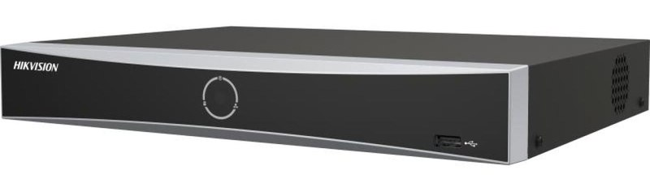

كل المنتجات ← كاميرات وأجهزة هيكفيجن
الموديل: DS-7604NXI-K1/4P

| الماركة | هيكفيجن |
|---|---|
| الموديل | DS-7604NXI-K1/4P |
| نوع المنتج | جهاز تسجيل NVR |
| التحليلات الذكية | |
| تحليلات ذكية بالجهاز | التعرف على الوجوه، الحماية المحيطية، كشف الحركة 2.0 |
| تحليلات ذكية بالكاميرا | التعرف على الوجوه، الحماية المحيطية، كشف رمي الأجسام من المباني، كشف الحركة 2.0، التعرف على اللوحات ANPR، تحليلات VCA |
| الحماية المحيطية | |
| من الجهاز | قناة واحدة, 4 MP (HD network camera, H.264/H.265) video analysis for human and vehicle recognition to reduce false alarm |
| من الكاميرا | كل القنوات |
| التعرف على الأهداف | |
| مقارنة صور الوجوه | 4 قنوات |
| كشف الوجوه وتحليلاتها | مقارنة صور الوجوه، التقاط الوجوه، البحث في صور الوجوه |
| مكتبة صور الوجوه | حتى 16 مكتبة صور وجوه، بإجمالي حتى 20,000 صورة وجه (كل صورة ≤ 4 ميجابايت، السعة الكلية ≤ 1 جيجابايت) |
| أداء كشف الوجوه وتحليلاتها | قناة واحدة، 8 ميجابكسل |
| كشف الحركة 2.0 | |
| من الكاميرا | كل القنوات |
| الفيديو والصوت | |
| مدخلات فيديو IP | 4 قنوات |
| النطاق الوارد | 40 Mbps |
| النطاق الصادر | 80 Mbps |
| مخرج HDMI | قناة واحدة, 4K (3840 × 2160)/30 Hz, 2K (2560 × 1440)/60 Hz, 1920 × 1080/60 Hz, 1600 × 1200/60 Hz, 1280 × 1024/60 Hz, 1280 × 720/60 Hz |
| مخرج VGA | قناة واحدة, 1920 × 1080/60 Hz, 1280 × 1024/60 Hz, 1280 × 720/60 Hz |
| وضع إخراج الفيديو | HDMI1/VGA simultaneous output |
| مخرج CVBS | غير متاح |
| مخرج الصوت | قناة واحدة، RCA (خطي، 1 كيلوأوم) |
| صوت ثنائي الاتجاه | قناة واحدة، RCA (2.0 فولت قمة لقمة، 1 كيلوأوم، باستخدام مدخل الصوت) |
| فك الترميز | |
| صيغة فك الترميز | H.265/H.265+/H.264+/H.264 |
| دقة التسجيل | 12 MP/8 MP/6 MP/5 MP/4 MP/3 MP/1080p/UXGA/720p/VGA/4CIF/DCIF/2CIF/CIF/QCIF |
| التشغيل المتزامن | 4 قنوات |
| قدرة فك الترميز | AI on: 2-channel 12 MP@30 fps, 3-channel 8 MP@30 fps, 4-channel 6 MP@30 fps, 4-channel 4 MP@30 fps, 4-channel 3 MP@30fps, 4-channel 2 MP@30fps AI off: 2-channel 12 MP@30 fps, 4-channel 8 MP@30 fps, 4-channel 6 MP@30 fps, 4-channel 4 MP@30 fps, 4-channel 3 MP@30fps, 4-channel 2 MP@30fps |
| نوع البث | فيديو، فيديو وصوت |
| ضغط الصوت | G.711ulaw/G.711alaw/G.722/G.726/AAC |
| الشبكة | |
| الاتصال عن بعد | 128 |
| واجهة البرمجة API | ONVIF (الملف S/G)؛ SDK؛ ISAPI |
| المتصفحات المتوافقة | IE11، Chrome V57، Firefox V52، Safari V12، Edge V89 أو أحدث |
| بروتوكول الشبكة | TCP/IP, DHCP, IPv4, IPv6, DNS, DDNS, NTP, RTSP, SADP, SMTP, SNMP, NFS, iSCSI, ISUP, UPnP™, HTTP, HTTPS |
| واجهة الشبكة | منفذ إيثرنت RJ-45 واحد 10/100/1000 ميجابت تكيفي |
| PoE | |
| الواجهة | 4, RJ-45 10/100 Mbps self-adaptive Ethernet interface |
| الطاقة | ≤ 50 W |
| المعيار | IEEE 802.3af/at |
| الواجهات المساعدة | |
| منفذ SATA | منفذ SATA واحد |
| السعة | سعة حتى 16 تيرابايت لكل قرص صلب |
| منفذ USB | اللوحة الأمامية: 1 × USB 2.0؛ اللوحة الخلفية: 1 × USB 2.0 |
| مدخل/مخرج الإنذار | 4/1;NA |
| عام | |
| لغة واجهة الاستخدام | الإنجليزية، الروسية، البلغارية، المجرية، اليونانية، الألمانية، الإيطالية، التشيكية، السلوفاكية، الفرنسية، البولندية، الهولندية، البرتغالية، الإسبانية، الرومانية، التركية، اليابانية، الدنماركية، السويدية، النرويجية، الفنلندية، الكورية، الصينية التقليدية، التايلاندية، الإستونية، الفيتنامية، الكرواتية، السلوفينية، الصربية، اللاتفية، الليتوانية، الأوزبكية، الكازاخية، العربية، الأوكرانية، القيرغيزية، البرتغالية البرازيلية، الإندونيسية |
| مصدر الطاقة | 48 VDC, 1.35 A |
| الاستهلاك | ≤ 10 W (بدون قرص صلب and PoE off) |
| حرارة التشغيل | من -10 °C إلى 55 °C (من 14 °F إلى 131 °F) |
| رطوبة التشغيل | من 10% إلى 90% |
| الأبعاد (عرض × عمق × ارتفاع) | 320 مم × 240 مم × 48 مم (12.6"× 9.4" × 1.9") |
| الشهادات | |
| شهادة CE | EN 55032: 2015, EN 61000-3-2, EN 61000-3-3, EN 50130-4, EN 55035: 2017 |
| الشهادات الحاصل عليها | CE KC WEEE REACH ROHS BIS CB RCM IC LOA UKCA |